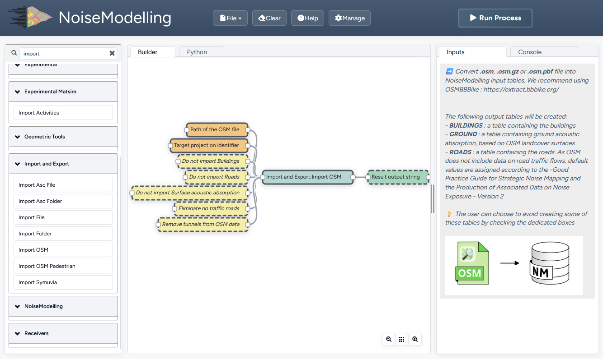
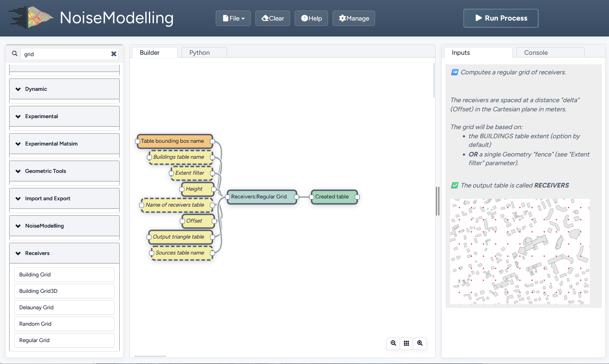
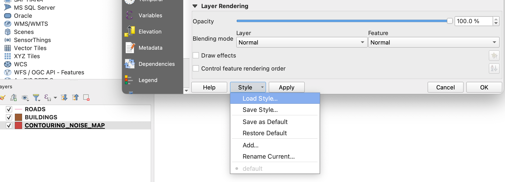
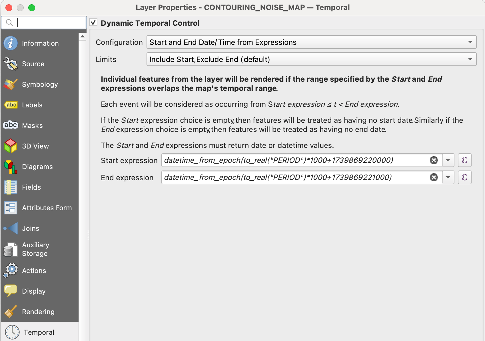
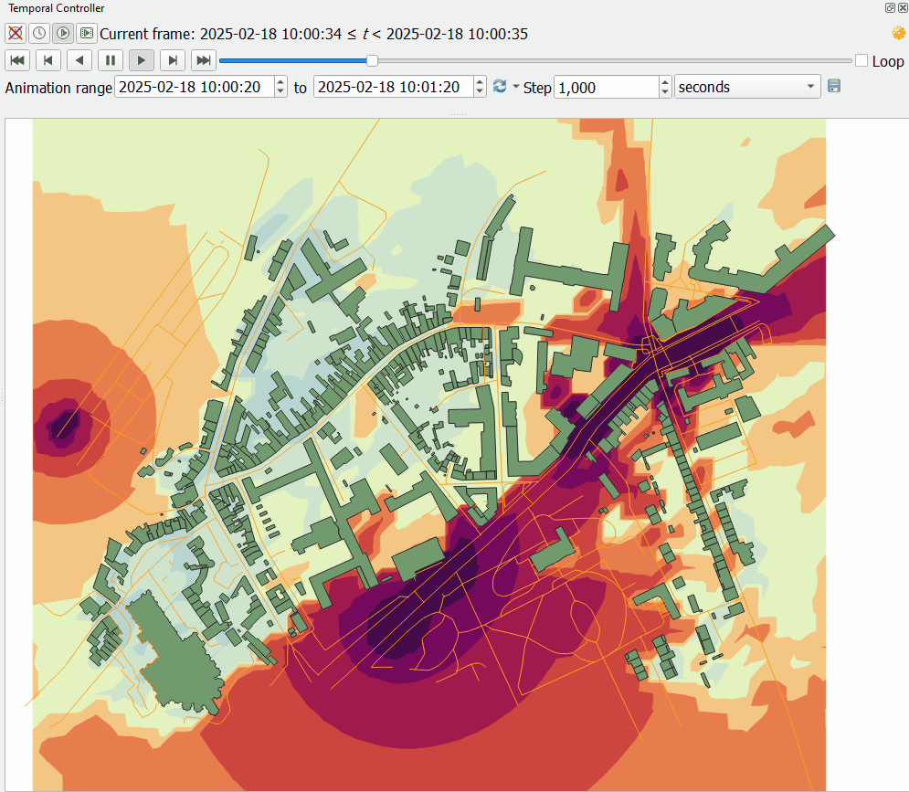

Dynamic Maps - GUI
Many publications have emerged showcasing the use of NoiseModelling to create dynamic maps (see scientific production).
If you’d like to achieve similar results but you feel a bit lost, this tutorial is here to help you navigate through the process.
There are three main approaches to creating dynamic maps using NoiseModelling:
A road network with a single traffic flow You have a road network and a single traffic flow associated with a specific time period (e.g., 24h). You want to compute dynamic indicators such as L10, L90, or the number of events exceeding a threshold or to get time series for the same time period.
A road network with traffic flows at regular intervals You have a road network and traffic flow data available at regular intervals (e.g., hourly or every 15 minutes), and you want to generate a dynamic noise map every 15 min.
A road network with associated spatio-temporal data of moving sources You have spatio-temporal information about vehicles moving around a network (e.g., from traffic simulations such as Symuvia or SUMO; or from trajectories of drones). You want to compute time-series data at each receiver corresponding to the passage of these sources.
A word of caution
Warning
In all these cases, we assume that the sound attenuation between the source and receiver remains constant throughout the calculation. This is a strong approximation, and there are ways to account for variations, but this tutorial will not cover such specific cases.
Dynamic mapping has its subtleties, and it’s important to be aware of them to avoid errors. We recommend referring to the following documents for a better understanding of these concepts:
Can, A., & Aumond, P. (2018). Estimation of road traffic noise emissions: The influence of speed and acceleration. Transportation Research Part D: Transport and Environment, 58, 155-171.
Gozalo, G. R., Aumond, P., & Can, A. (2020). Variability in sound power levels: Implications for static and dynamic traffic models. Transportation Research Part D: Transport and Environment, 84, 102339.
Le Bescond, V., Can, A., Aumond, P., & Gastineau, P. (2021). Open-source modeling chain for the dynamic assessment of road traffic noise exposure. Transportation Research Part D: Transport and Environment, 94, 102793.
Assumptions are freely made, specific formats are expected, and so on. To understand the required data formats and check the expected structure of the input tables, please refer also to the example input tables and spatial layers!
Case 1: A Road Network with a Single Traffic Flow
Import the road network (with arbitrary traffic flows) and buildings from an OSM file
Use Import_OSM Block
Path of the osm file: Enter the path of the provided Open Street map file (can be relative to NoiseModelling):resources/map.osm.gzTarget projection identifier: Enter the official France projection for this tutorial files2154Remove tunnels: Check itDo not import surface: Check it as we will not use this output

Create a receiver grid using 25 meters step in a grid pattern
Use Regular_Grid Block
Table bounding box name: EnterROADSThe receivers will use the envelope of the ROADS table.Offset: Enter15for 15 meters distanceOutput triangle table: Check it in order to be able to generate the iso contoursheight: Enter1.5

Convert traffic to dynamic traffic flow
From the network with traffic flow to individual trajectories with associated Lw
The Probabilistic method, this method places randomly the vehicles on the network according to the traffic flow
The Poisson method places the vehicles on the network according to the traffic flow following a poisson law, it keeps a coherence in the time series of the noise level
Use the Dynamic:Flow_2_Noisy_Vehicles Block:
Method: SelectTNPto use the Poisson methodRoads table name: EnterROADStimestep: Enter1duration: Enter60gridStep: Enter10
Compute noise level at receiver points for each receiver-period combination
Use the NoiseModelling:Noise_level_from_source Block
Buildings table name: EnterBUILDINGSSource geometry table name: EnterSOURCES_GEOMContains only the geometries of the sources (points)Source emission table name: EnterSOURCES_EMISSIONContains for each source index and period the noise emissionReceivers table name: EnterRECEIVERSMax Error (dB): Enter3Will skip further sources, reduces the computation time for this tutorialMaximum source receiver distance: Enter800Diffraction on horizontal edges: Check itOrder of reflexion: Enter0
Compute noise indicators
This step is optional, it computes the LA10, LA50 and LA90 time-aggregated indicators at each receiver from the table RECEIVERS_LEVEL
Use the Acoustic_Tools:DynamicIndicators WPS Block
tableName: EnterRECEIVERS_LEVELcolumnName: EnterLAEQ
Compute iso-surfaces for each time period
Generate a dynamic iso-contour map for each time period based on the LAEQ of the receivers.
Use the Acoustic_Tools:Create_Isosurface WPS Block
Sound levels table: EnterRECEIVERS_LEVELPolygon smoothing coefficient: Enter0
Export Map to QGis
Use Export_Table Block to export the following tables as files in any folder.
CONTOURING_NOISE_MAPBUILDINGSROADS
Configure QGis to display time dependant map
Load the 3 files in QGIS. Contouring_noise_map must be ordered as the last layer (rendered in the bottom)
Load the style for contouring noise map:

Load the style located in the NoiseModelling folder Docs/styles/style_beate_tomio.sld
In QGis, in time window, paste the following formulae:
Start expression: datetime_from_epoch(to_real("PERIOD")*1000+1739869220000)
End expression: datetime_from_epoch(to_real("PERIOD")*1000+1739869221000)

Epoch is in millisecond, so we multiply by 1000 and add any base epoch time. The step end 1000 milliseconds after the start period.
With the navigation bar of QGis you can select the period to display.

Case 2: A Road Network with Traffic Flows at Regular Intervals
This case is similar to the MATSim use case (here), but this tutorial generalizes the approach to fit other datasets.
This sample dataset used in this example was kindly provided by Valentin Le Bescond from Université Gustave Eiffel.
Import Buildings for your study area
Use Import File Block
Path of the input File: Enter the path of building (can be relative to NoiseModelling):resources/Dynamic/Z_EXPORT_TEST_BUILDINGS.geojsonProjection identifier: Enter SRID2154Output table name: Enterbuildings
Import the road network
Use Import File Block
Path of the input File: Enter the path of building (can be relative to NoiseModelling):resources/Dynamic/Z_EXPORT_TEST_TRAFFIC.geojsonProjection identifier: Enter SRID2154Output table name: Enterroads
Create a receiver grid using 25 meters step in a grid pattern
Use Regular_Grid Block
Table bounding box name: EnterROADSThe receivers will use the envelope of theROADStable.Offset: Enter25for 25 meters distanceheight: Enter1.5
Split geometry and traffic periods
In the table ROADS, the traffic information is given for each period in the PERIOD column.
The following Block aggregates roads by the geometry and places the associated pair IDSOURCE/PERIOD
with the corresponding road traffic into the SOURCES_EMISSION table.
Use the Block Dynamic::Split_Sources_Period :
Source table name: EnterROADSSource index field name: EnterLINK_IDSource period field name: EnterPERIOD.
Two output tables are created SOURCES_GEOM and SOURCES_EMISSION
Compute noise level at receiver points for each receiver-period combination
Use the NoiseModelling:Noise_level_from_source Block
Buildings table name: EnterBUILDINGSSource geometry table name: EnterSOURCES_GEOMContains only the geometries of the sources (points)Source emission table name: EnterSOURCES_EMISSIONContains for each source index and period the noise emissionReceivers table name: EnterRECEIVERSDiffraction on horizontal edges: Check itOrder of reflexion: Enter0
The RECEIVERS_LEVEL output table is created.
Compute noise indicators
This step is optional, it computes the LA10, LA50 and LA90 time-aggregated indicators at each receiver from the table RECEIVERS_LEVEL.
Use the Acoustic_Tools:DynamicIndicators WPS Block
tableName: EnterRECEIVERS_LEVELcolumnName: EnterLAEQ
Visualizing results
The result table RECEIVERS_LEVEL can be displayed in QGis, if you filter by PERIOD.
Case 3: Spatio-Temporal Data of Moving Sources
This sample dataset was kindly provided by Sacha Baclet from KTH (See his ORCID).
Import Buildings for your study area
Use Import File Block
Path of the input File: Enter the path of building (can be relative to NoiseModelling):resources/Dynamic/buildings_nm_ready_pop_heights.shpProjection identifier: Enter SRID32635Output table name: Enterbuildings
Import the receivers (or generate your set of receivers using Regular_Grid script for example)
Use Import File Block
Path of the input File: Enter the path of building (can be relative to NoiseModelling):resources/Dynamic/receivers_python_method0_50m_pop.shpProjection identifier: Enter SRID32635Output table name: Enterreceivers
Import the road network
Use Import File Block
Path of the input File: Enterresources/Dynamic/network_tartu_32635_.geojsonProjection identifier: Enter SRID32635Output table name: Enternetwork_tartu
Add primary key column to the road network (Optional)
Use Add_Primary_Key Block
Name of the column: EnterPKName of the table: Enter SRIDnetwork_tartu
Import the vehicle trajectories
Use Import File Block
Path of the input File: Enterresources/Dynamic/SUMO.geojsonProjection identifier: Enter SRID32635Output table name: Entervehicle
Create point sources from the network every 10 meters
This point source will be used to compute the noise attenuation level from them to each receiver.
The created table will be named SOURCES_GEOM.
Use Point_Source_From_Network Block
Input table name: Enternetwork_tartugridStep: Enter SRID10
Create a table with the noise level from the vehicles and snap the vehicles to the point sources
Use Ind_Vehicles_2_Noisy_Vehicles Block
Source geometry table: EnterSOURCES_GEOMIndividual Vehicles table: EntervehicleSnap distance: Enter30This is the maximal distance (m) to reattach individual vehicle positions to the source pointsVehicles table format: EnterSUMO
Compute noise attenuation for each receiver-source pairs
- Unlike the previous tutorial we will use an alternative approach here by storing the attenuation between all sources and receivers first.
This attenuation will be applied later to the emission levels for each period.
Use the NoiseModelling:Noise_level_from_source Block
Buildings table name: EnterBUILDINGSSource geometry table name: EnterSOURCES_GEOMContains only the geometries of the sources (points)Receivers table name: EnterRECEIVERSMaximum source receiver distance: Enter300Diffraction on horizontal edges: Check itOrder of reflexion: Enter0Separate receiver level by source identifier: Check it to have the SOURCEID column on the output
Apply attenuation on emission levels
Compute the noise level from the moving vehicles to the receivers.
The output table is called here LT_GEOM and contains the time series of the noise level at each receiver.
Use the Dynamic:Noise_From_Attenuation_Matrix Block
LW(PERIOD): EnterSOURCES_EMISSIONAttenuation Matrix Table name: EnterRECEIVERS_LEVELoutputTable Matrix Table name: EnterLT_GEOM
Compute noise indicators
This step is optional, it computes the LA10, LA50 and LA90 time-aggregated indicators at each receiver from the table LT_GEOM
Use the Acoustic_Tools:DynamicIndicators WPS Block
tableName: EnterLT_GEOMcolumnName: EnterLAEQ
Visualizing results
The result table LT_GEOM can be displayed into QGis, if you filter by PERIOD.
Note
All this tutorial done with Groovy is written on this unit test source code: Github source